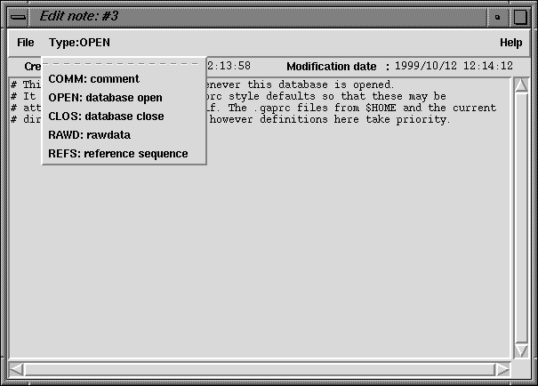

Double clicking on a note in the Note Selector, or creating a new note, will bring up the Note Editor Window. This is simple text editor, allowing use of keyboard arrow keys and the mouse to position and edit text. It also has keyboard bindings for many of the simple emacs movement commands.

At the top of the Notes Editor are three buttons. The leftmost is the File menu which contains the "Save", "Delete" and "Exit" options. Next to this is the Type selector. This menu name displays the currently selected note type. To change the note type select the appropriate type from the Type menu. The final button gives access to the online Help.
Listed underneath the menu are the creation and modification dates. The creation date if fixed when a note is created. The modification date is adjusted every time a note is edited. (Simply viewing a note will not update the modification date, but saving changes to it will.)
Underneath these is the note text itself. For convenience, the first line of each note is shown in the note selector window (so it can be helpful to make it identifiable).